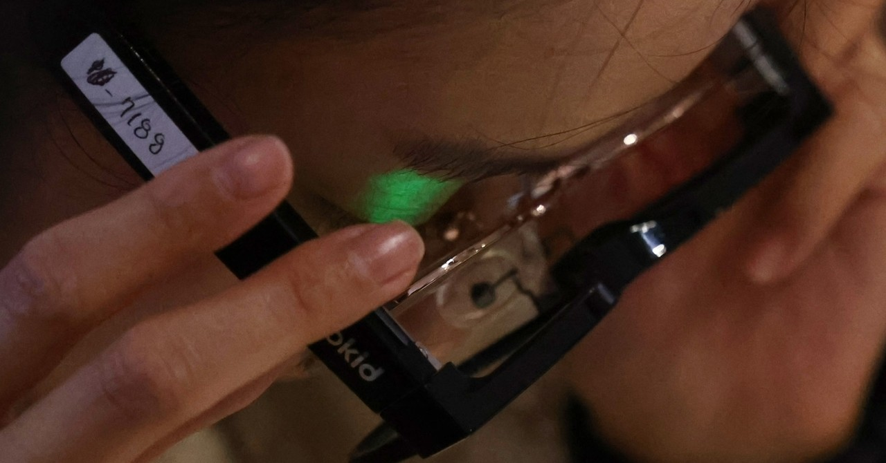
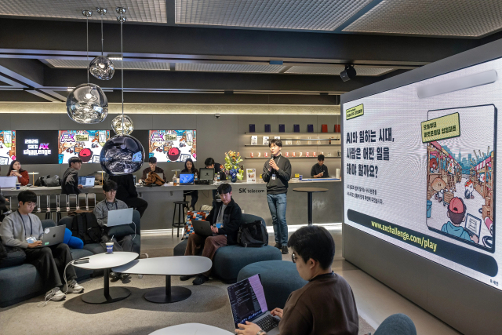
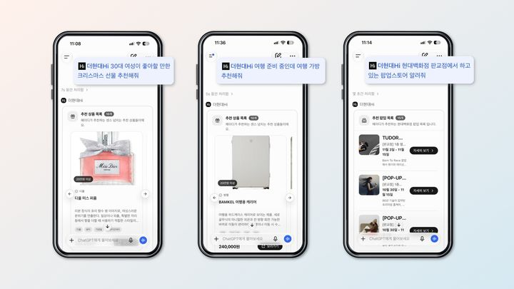
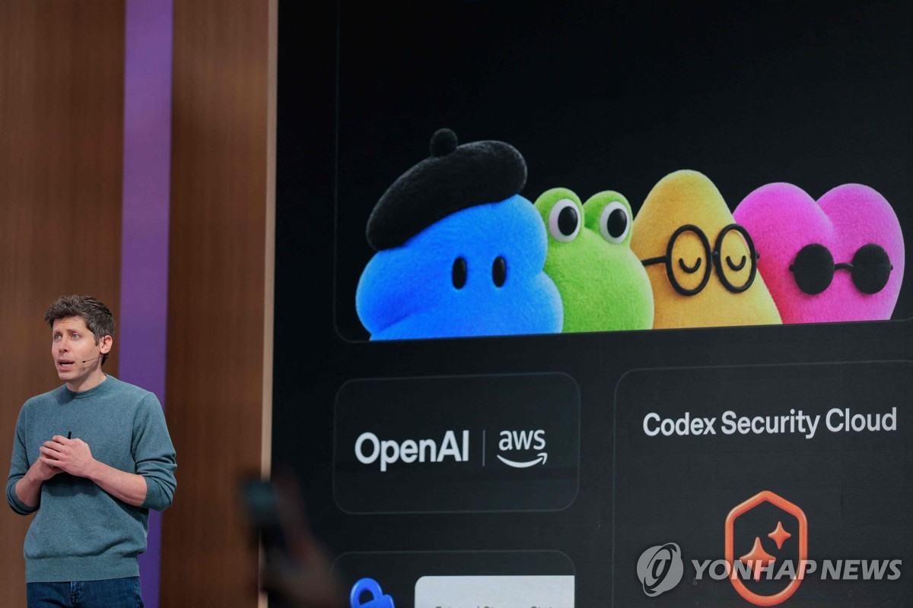
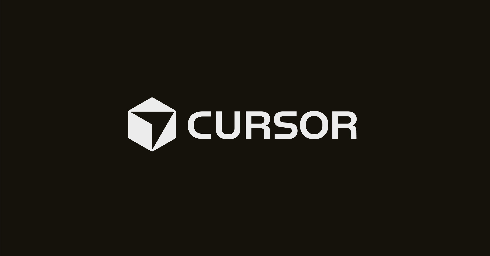

01 · KR
세무사 시험 AI 부정행위 자수
시험 → 검수
세무사 시험 수석 합격자가 초소형 카메라로 문제를 촬영하고 AI로 답을 확인했다고 자백했다. 산업인력공단은 고소·합격 취소와 국가자격시험 전수조사, 재발 방지 대책을 추진한다고 밝혔다.
원문 보기 ↗ 후속 보도 ↗ADDIT INSIGHT
기기 반입·전파·감독·사후 검증을 묶은 다층 체계가 필요하다.
시험·업무·쇼핑·개발 도구로 확장되는 AI 사례를 통해 권한·인증정보·사람의 검수선을 살펴봅니다.
오늘은 AI가 유용해지는 순간 함께 커지는 권한·공급망·공정성 리스크를 운영 관점에서 점검합니다.
시험장까지 들어온 생성형 AI, 자격검정의 기기·검수 체계 재설계
Cursor 침해, 협력사 키 노출이 악성 확장 배포로 이어진 공급망 경고
Fable 5.2, 1,000개 에이전트로 Lean 형식화 실험
SKT AX 챌린지, 자료 수집은 AI·판단과 승인은 사람으로 분리
AI 쇼핑·닷츠 확산, 추천에서 거래·실행으로 권한 이동

시험 → 검수
세무사 시험 수석 합격자가 초소형 카메라로 문제를 촬영하고 AI로 답을 확인했다고 자백했다. 산업인력공단은 고소·합격 취소와 국가자격시험 전수조사, 재발 방지 대책을 추진한다고 밝혔다.
원문 보기 ↗ 후속 보도 ↗기기 반입·전파·감독·사후 검증을 묶은 다층 체계가 필요하다.

업무 → 분업
SKT는 AI 에이전트가 구성된 가상 사내 환경에서 자료 수집·정리·반복 처리를 수행하고 참가자가 업무 시스템을 연결하는 AX 챌린지를 진행했다. 판단·결정·승인은 사람이 맡는 구조다.
원문 보기 ↗AI가 할 일보다 사람이 끝까지 책임질 판단을 먼저 정하자.

추천 → 거래
현대백화점은 오픈AI 앱스 인 챗GPT에 더현대 하이 전용 쇼핑 서비스를 선보였다. 챗GPT에서 상품을 추천받은 뒤 상품 확인·구매·결제·예약까지 이어지고 오프라인 정보도 안내한다.
원문 보기 ↗상품 피드·재고·가격·예약 정책을 정본 데이터로 관리해야 한다.

비서 → 권한
연합뉴스는 GPT 기반 AI 비서 닷츠를 한 달 사용한 경험을 통해 이메일·일정 등 개인 업무 데이터와 에이전트 권한의 관계를 다뤘다. 유용성이 커질수록 권한의 범위와 회수 방법이 중요해진다.
원문 보기 ↗읽기·쓰기·전송 권한을 나누고 사용자가 언제든 회수하게 하자.

키 → 공급망
Cursor는 Fireworks에 발급한 접근 키 노출 뒤 내부 SaaS 자료 접근과 악성 Claude Code 확장 배포가 이어졌다고 밝혔다. 특정 캐시 버전을 요청한 최대 5,000명이 약 11시간 동안 영향을 받았을 가능성이 있다.
Cursor 공식 원문 ↗ 국내 보도 ↗모델뿐 아니라 추론사·저장소·확장·키까지 연결 경로를 점검하자.